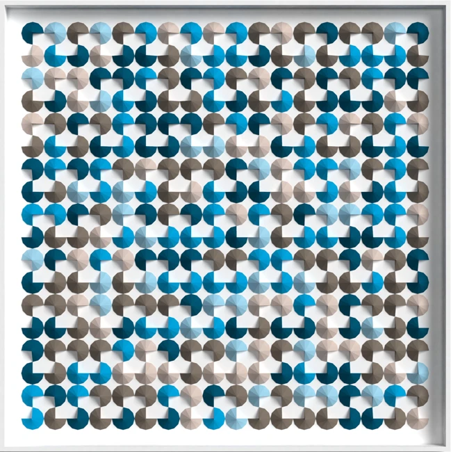
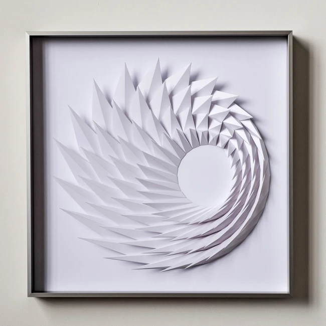
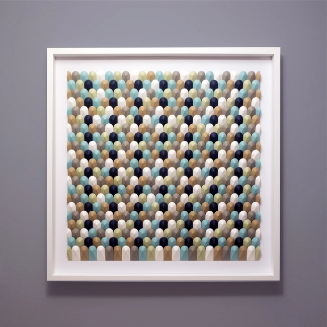
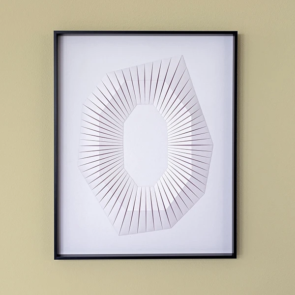
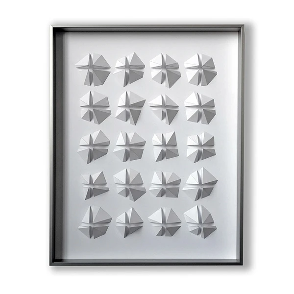
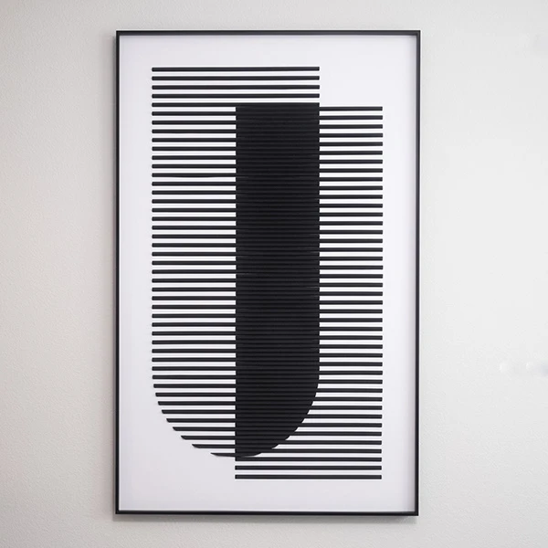

The archive
Previous designs
Earlier explorations in folded paper, organized by their original collections.

New
Explore series ↗
Radiant
Explore series ↗
Gradients
Explore series ↗
Uneven
Explore series ↗
Eclipse
Explore series ↗
Swirls
Explore series ↗
Elements
Explore series ↗
Colors
Explore series ↗
Canopies
Explore series ↗
Patterns
Explore series ↗